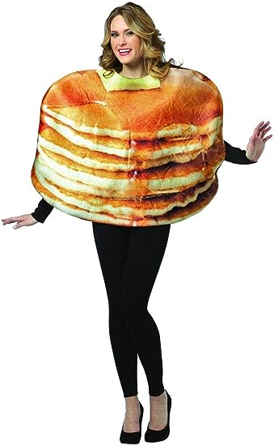

Fluffy Buttermilk Pancakes

Description
The fluffiest pancakes you can imagine, just waiting to be drowned in butter and sugar liquid of your choice.
Ingredients:
Dry Ingredients
- 2 1/2 cup white flour
- 1/4 cup sugar
- 2 tsp salt
- 1 tsp baking powder
- 1 tsp baking soda
Wet Ingredients
- 2 eggs
- 1 stick melted butter
- 2 cup buttermilk
- 2 tsp vanilla
Directions:
- Combine the dry ingredients and mix until combined.
- Whisk the wet ingredients together until consistent then gently fold into the dry ingredients until just evenly combined. Do not overmix.
- Add a dollop of pancake batter to a buttered pan over medium heat.
- Cook pancakes flipping when the batter starts to bubble.
- Remove pancakes and add butter and syrup or other toppings to taste.